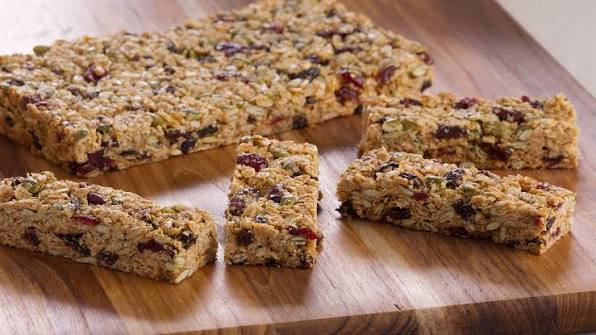

Barras de Avena Caseras

Las barras de avena caseras son un snack saludable, práctico y lleno de energía. Elaboradas con avena, miel y frutos secos, son ideales para llevar al trabajo, consumir antes de entrenar o disfrutar como una colación nutritiva durante el día.